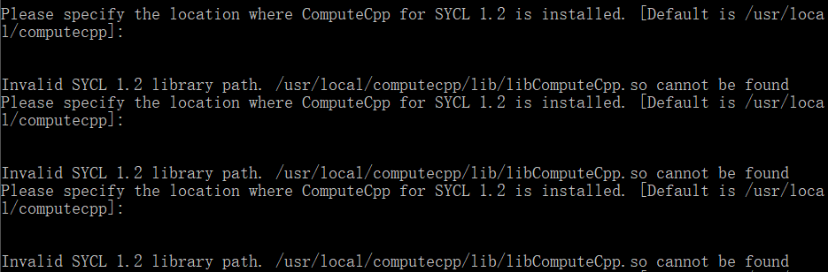

计算图又叫数据流图，是一种通过有向图的形式表述计算过程的方法。计算图的节点分为常数节点、计算节点、特殊节点（输出、修改等）。节点之间的边表示数据的依赖关系。
使用计算图的好处在于可以结构化地表达计算过程，并且便于进行操作，在机器学习领域有重要应用。Tensorflow是对计算图的一个很好的实现。通过图的形式描述计算有许多优点：
当然缺点也是显而易见的，这种结构编程较为复杂，也给调试增加了难度。
按照https://www.tensorflow.org/api_guides/cc/guide的说明进行操作。平台为Windows下的Ubuntu子系统：
Linux version 4.4.0-43-Microsoft (Microsoft@Microsoft.com) (gcc version 5.4.0 (GCC) ) #1-Microsoft Wed Dec 31 14:42:53 PST 2014
按照说明操作即可，不要忘了将Bazel安装目录添加到PATH：
$ sudo vim /etc/profile
在末尾加入
export PATH="$PATH:$HOME/bin"
上面是默认安装位置，可根据实际情况修改。
运行./configure进行配置，里面选项我也不知道干嘛的，就全用了默认值，结果出错了。查阅资料发现，其中有一步
Do you wish to build TensorFlow with OpenCL support? [y/N]
要选n，否则会出现如下一直循环的情况：

如果不幸出现这种情况，请Ctrl+C结束程序，重新配置。
复制一份源码，建立文件tensorflow/cc/example/example.cc，写入如下内容：
// tensorflow/cc/example/example.cc
#include "tensorflow/cc/client/client_session.h"
#include "tensorflow/cc/ops/standard_ops.h"
#include "tensorflow/core/framework/tensor.h"
int main() {
using namespace tensorflow;
using namespace tensorflow::ops;
Scope root = Scope::NewRootScope();
// Matrix A = [3 2; -1 0]
auto A = Const(root, { {3.f, 2.f}, {-1.f, 0.f} });
// Vector b = [3 5]
auto b = Const(root, { {3.f, 5.f} });
// v = Ab^T
auto v = MatMul(root.WithOpName("v"), A, b, MatMul::TransposeB(true));
std::vector<Tensor> outputs;
ClientSession session(root);
// Run and fetch v
TF_CHECK_OK(session.Run({v}, &outputs));
// Expect outputs[0] == [19; -3]
LOG(INFO) << outputs[0].matrix<float>();
return 0;
}
建立文件tensorflow/cc/example/BUILD，写入如下内容：
load("//tensorflow:tensorflow.bzl", "tf_cc_binary")
tf_cc_binary(
name = "example",
srcs = ["example.cc"],
deps = [
"//tensorflow/cc:cc_ops",
"//tensorflow/cc:client_session",
"//tensorflow/core:tensorflow",
],
)
运行bazel run -c opt //tensorflow/cc/example:example，然后见证奇迹即可。首次编译时间较长，可以先去打一局农药（误）。如果输出是19 -3则运行正确。
以下对常用的类与接口进行简单介绍，具体内容可查阅官方文档。
首先需要说明一些常用概念。在TensorFlow中，用张量(tensor)来表示数据，使用图(graph)来表示计算任务，图中的节点称为op(operation)。计算的过程是，在会话(Session)里启动一个图，会话将图的op分发到CPU（或GPU）中计算，然后返回tensorflow::Tensor实例。
Scope类是维护计算图当前状态的主要数据结构，里面包含了计算图的一些属性，也封装了一些TensorFlow的操作。在构造节点时，Scope对象需要作为第一个参数传入。
Scope root = Scope::NewRootScope();
//生成一个新的scope
TensorFlow中，不同的op类型由不同的类实现，我们可以通过Operation Constructors来构造节点。所有的Operation Constructors第一个参数都为Scope对象，因此首先需要定义一个Scope。
Scope scope = Scope::NewRootScope();
auto a = Add(scope, a, b); //加法
auto m1 = Multiply(scope, a, b); //这里做的是对应元素相乘，注意和下面的矩阵乘法区分
auto m2 = MatMul(scope, a, b); //创建矩阵乘法节点，a, b为两个输入参数
auto m3 = MatMul(scope, a, b, MatMul::TransposeA(true));
//构造节点时可以指定一些属性，上面表示对第一个参数进行转置
auto m = MatMul(scope, a, b, MatMul::TransposeA(true).TransposeB(true));
//多个属性可以这样写，表示对两个参数都进行转置操作
auto f = Const(scope, 3.14); //创建浮点常量
auto s = Const(scope, "Helloworld!"); //字符串常量
auto t = Const(scope, {{{1},{2},{3}}}); //创建1×3×1的张量
auto c1 = Const(scope, 10, /* shape */ {2, 2});
//也可以这样指定一个2×2的矩阵
auto c2 = Const(scope, {1, 2, 3, 4, 5, 6}, /* shape */ {1, 3, 2, 1});
//这样则是1×3×2×1的四阶张量，比大括号嵌套的写法可读性更强
Placeholder允许我们在运行时输入节点的数值，而不必在构建运算图时指定数值，从而起到占位符的作用。
auto a = Placeholder(scope, DT_INT32);
第二个参数表示数据类型，常用数据类型如下表，更多内容请查阅官方API：
| 数据类型 | 描述 |
|---|---|
| DT_INT32 | 32位整数 |
| DT_FLOAT | 32位浮点数 |
| DT_DOUBLE | 64位浮点数 |
| DT_COMPLEX64 | 两个float组成的复数 |
| DT_STRING | 字符串 |
我们需要一个session来执行运算图。session可以对计算图进行封装。具体地，我们将使用ClientSession类来实现。主要接口如下：
ClientSession(const Scope & scope);
//构造函数，接收一个Scope对象
Run(const std::vector<Output>& fetch_outputs, std::vector<Tensor>* outputs) const;
//运行计算图，第一个参数为要计算的节点们，第二个参数为保存输出的地址
Run(
const FeedType & inputs, //以map形式输入参数
const std::vector< Output > & fetch_outputs, //要计算的节点
std::vector< Tensor > *outputs //输出
) const;
下面是一个例子：
Scope root = Scope::NewRootScope(); //搞一个scope
auto c = Const(root, { {1, 1} });
auto m = MatMul(root, c, { {42}, {1} }); //创建两个节点
ClientSession session(root); //创建session
std::vector<Tensor> outputs; //用它保存输出
session.Run({m}, &outputs);
// outputs[0] == {42}
利用上面介绍的接口，我们可以建立一个简单的运算图，如下。
abcd为四个输入节点，中间有若干计算节点，最后算出h的值。重写example的代码：
#include "tensorflow/cc/client/client_session.h"
#include "tensorflow/cc/ops/standard_ops.h"
#include "tensorflow/core/framework/tensor.h"
int main(){
using namespace tensorflow;
using namespace tensorflow::ops;
Scope root = Scope::NewRootScope();
/* 构建运算图 */
auto a = Placeholder(root, DT_INT32);
auto b = Placeholder(root, DT_INT32);
auto c = Const(root, { {3, 1}, {2, 2} });
auto d = Placeholder(root, DT_INT32);
auto e = MatMul(root, a, b);
auto f = Add(root, b, c);
auto g = MatMul(root, e, f, MatMul::TransposeB(true));
auto h = Multiply(root, d, g); //注意这里的乘法是元素直接乘
/* 执行计算 */
std::vector<Tensor> outputs;
ClientSession session(root);
session.Run(
{ {a, { {2, 1}, {0, 5} }}, {b, { {3, 3}, {7, -2} }}, {d, { {5, 5}, {5, 5} }} },
//全是大括号……眼花
{h},
&outputs);
LOG(INFO) << outputs[0].matrix<int>();
return 0;
}
再次运行bazel run -c opt //tensorflow/cc/example:example，可以看到输出如下：

输出和预期一致，大成功！
我们不打算从分布式性能、GPU内存占用等比较高级的应用层面进行评价，下面仅从面向对象程序设计课程的角度简单地探讨一下接口的优劣。
通过上面几个小例子可以看出，每一种运算节点都是单独的一个类，这样便于对不同的节点编写具体的实现函数。其优点就是面向对象编程的优点，用户只需调用提供的接口，不必关心内部实现（实际上我找了半天，想看看节点类的继承结构，但没找到）。例如在创建节点的时候，写法很统一：
auto <变量名> = <节点名>(<Scope对象>, <其他参数>);
不管是计算节点还是常数节点，或者是Placeholder，定义方式都是统一的，便于编程。
通过ClientSession类把图的构造和执行分开，便于分开编程和调试，这也体现了面向对象编程的特点。
说到缺点，主要是难以上手。其他的缺点暂时也想不到什么，毕竟是Google的大佬们研发出来，并且修改了这么多版的。没有研究底层实现，也用的比较少，很难找出什么明显缺点。
简要介绍一下神经网络手写数字识别的原理。
Sigmoid neurons就像神经元，有若干输入（即一个向量）和一个输出。输入一个向量，通过一个函数计算出输出
。在手写数字识别中，我们可以采用这样的函数：
用许多个这种神经元，我们可以构造出一个多层神经网络，如下图。

(图片来源：http://neuralnetworksanddeeplearning.com/chap1.html，仅用作学习使用)
其中最左侧第一层的输入是待识别图片每一个像素的灰度值，中间有15个神经元，具体参数待定，10个输出表示该图片与某个数字的相似程度。
下一步就是计算神经元的参数，这里采用随机梯度下降法。首先我们需要有一组训练数据，对于数据集中的每一个输入
，我们都知道它的期望输出
。先随机取一组初始参数，计算出
对应的输出
，然后计算误差函数：
实际的神经网络中往往需要大量的神经元，因此参数个数巨大，计算梯度较为复杂，如果采用基于计算图的反向传播算法，则可以方便地进行梯度计算。
以下页面在完成作业时有参考，但未在文中显式列出或加入超链接，在此一并表示感谢。